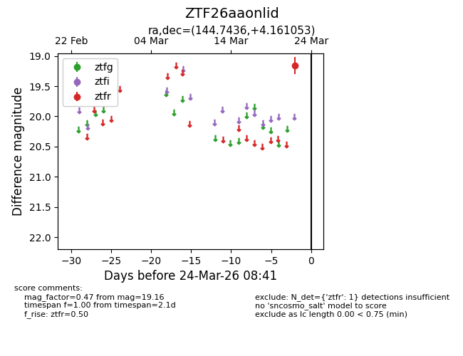
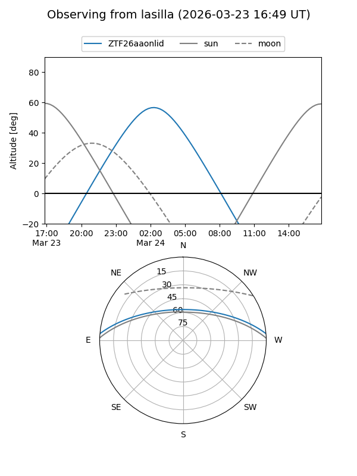
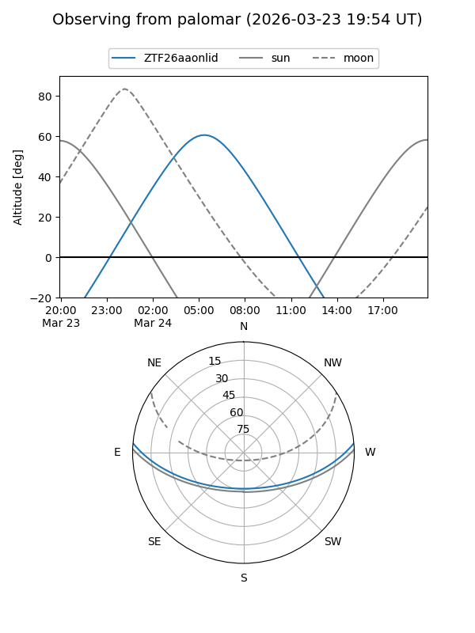

ZTF26aaonlid
Target ZTF26aaonlid at 2026-03-24 08:43
Aliases and brokers:
FINK: link
Lasair: link
ALeRCE: link
alt names
ZTF26aaonlid (ztf,fink_ztf)
Coordinates:
equatorial (ra, dec) = 144.7436,+4.16105
equatorial (HMS+DMS) = 09:38:58.46,+04:09:39.79
galactic (l, b) = (230.7770,+38.73352)
Flags:
Photometry:
last ztfr=19.16
1 ztfr detections
Lightcurve

Visibility


Additional plots